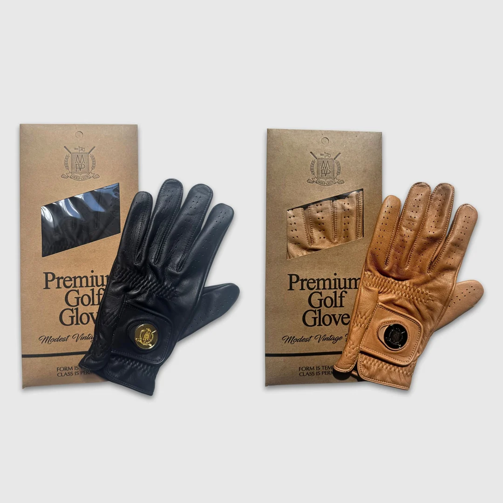
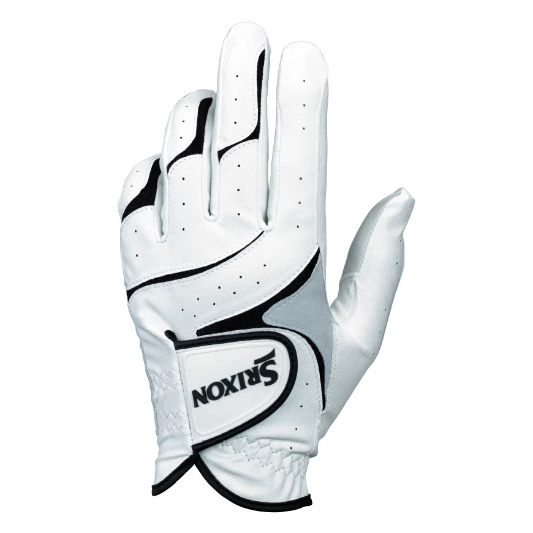
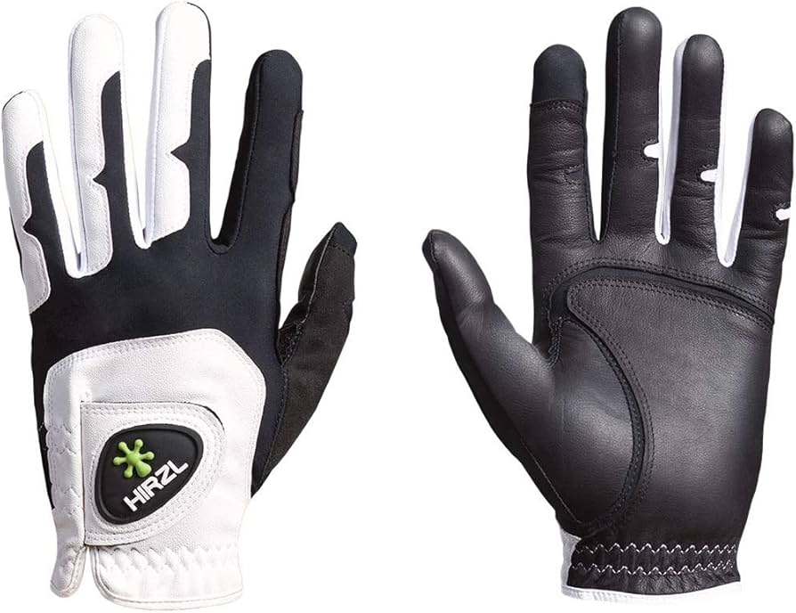
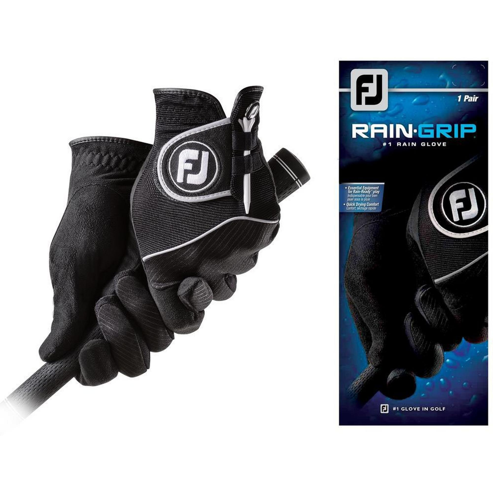

Premium Leather (Cabretta)
Soft cabretta leather gloves offer a very close, responsive feel on the grip. They usually fit snugly and feel luxurious, but they can wear out faster and may stretch if they get wet too often.
Golf gloves and towels are simple accessories, but they have a big impact on comfort, consistency, and how you take care of your equipment. This page explains what they do, how different materials feel and perform, and where golfers in Vancouver can find them.
A golf glove is worn on the lead hand (left hand for right-handed players, right hand for left-handed players). Its main purpose is to improve grip and prevent the club from slipping, especially when your hands get sweaty or it starts to rain.
Gloves also help reduce blisters and hot spots that can appear after a long practice session or a full round. A stable, comfortable grip makes it easier to swing with confidence and repeat the same motion throughout the day.
Golf gloves come in several material options. Each one feels different on the hand and performs differently in various weather conditions.

Soft cabretta leather gloves offer a very close, responsive feel on the grip. They usually fit snugly and feel luxurious, but they can wear out faster and may stretch if they get wet too often.

Synthetic gloves are more durable and often more affordable. They may not feel as soft as leather, but they keep their shape longer and are easier to maintain in different weather.

Many modern gloves combine leather in key areas with synthetic panels for flexibility and durability. This creates a balanced glove with good feel, comfort, and lifespan.

All-weather or rain gloves use special fabrics that grip better when wet. They’re ideal for playing in rainy or humid conditions—especially in places like Vancouver.
A golf towel may look simple, but it is essential for keeping clubs, balls, and grips clean. Dirt, grass, and water on the clubface can change spin and launch, and a slippery grip can affect your swing.
Golf towels usually clip onto the bag or are looped through a ring. Many players carry one towel for wiping clubs and another smaller towel for hands and grips.
Just like gloves, towels come in different fabrics, each with its own advantages.
Microfiber towels are very absorbent and great at lifting dirt out of grooves. They dry quickly and are light, which makes them a popular choice for most golfers.
Cotton towels feel soft and familiar, but they can absorb a lot of water and become heavy. They work well in dry conditions or when you prefer a classic towel texture.
Waffle or textured patterns help scrub the clubface and grooves more effectively. These designs are good for players who want very clean contact with the ball.
Golfers in Vancouver are lucky to have many great places to buy gloves, towels, and other accessories. Here are some of the most popular and reliable stores in the city:
These shops carry major brands, offer different price levels, and often let you compare glove sizes and materials in person. For towels, you can check texture, weight, and size before choosing one.
Many well-known golf brands make gloves and towels, each offering different styles, materials, and price ranges. Here are the most common brands you will find in Vancouver:
Most Vancouver shops carry these brands, and each one offers glove sizes, fabrics, and textures that suit different playing conditions.
As an amateur golfer, it is easy to overlook gloves and towels compared to drivers or irons, but these accessories directly affect how you grip the club and how clean your equipment stays.
By trying different materials and paying attention to how they feel in Vancouver’s changing weather, you can build a simple setup—a glove you trust and a towel you use often—that quietly supports every round you play.